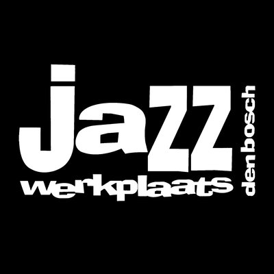
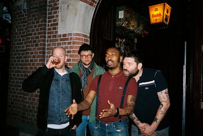
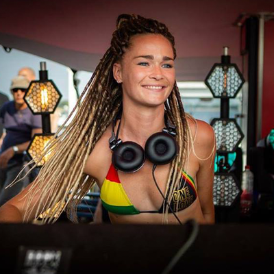
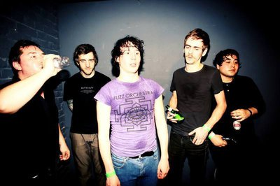
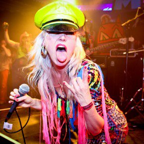

vrijdag
16:00-23:00
Frank Willems
De Bossche kunstenaar Frank Willems timmert hard aan de weg met zijn urban art. Voor RAUWKOST timmert hij dit keer aan een muur: de dichtgetimmerde ramen in de gevel van het pand van Jong Actief, waarin hij panelen plaatst met schilderingen die de komende jaren blijven hangen!

vrijdag
16:00-23:00
Hot Tubs
Terwijl het weer het vriespunt nadert wordt het water in de hottub warmer. Vind je het te koud buiten? Plons in een van de drie hottubs die te vinden zijn naast de platenbus op het buitenterrein. Neem je zwemkleding mee (of niet) en kom lekker badderen terwijl de plaatjesdraaier de beste klassiekers speelt.


vrijdag
19:30-23:30
Lamarziendan
Lamarziendan is hét rondreizende podium van Den Bosch voor alle lagen en regionen van de (podium)kunsten. Een collectief van makers die elkaar nog niet kenden zet improviserend een avond neer vol cabaret, circus, theater, poëzie, performance, muziek en kleinkunst. Wil jij ook spontaan optreden? Lamarziendan!






vrijdag
22:45-23:25
Ploegendienst
Ploegendienst trapt graag en hard. Tegen de massa, tegen dichte deuren en tegen OV-poortjes. Letterlijk dan. Figuurlijk is het een band die iedere zaal in zo kort mogelijke tijd wil slopen. Muzikaal zit het ergens tussen 80’s hardcorepunk, oi en trash. De Nederlandstalige teksten gaan vooral over de grote ongemakken des levens: toersistenterreur, kapotte telefoons en het systeem. Compacte, snoeiharde punk nummers die je direct mee wilt schreeuwen. Zanger Ray Fuego (SMIB) laat zich op het podium van zijn beste kant zien.


vrijdag
23:00-03:30
RGB Silent disco | Braaf
Drie meisjes uit totaal verschillende hoeken van de stad bundelen hun krachten tijdens de enige echte afterparty van RAUWKOST festival 2019! In de spiegelzaal van Willem Twee poppodium hebben zij de tofste feest concepten en dj's van de omgeving uitgenodigd op drie verschillende kanalen: Rauw, Groovy, Braaf

vrijdag
23:00-03:30
RGB Silent disco | Groovy
Drie meisjes uit totaal verschillende hoeken van de stad bundelen hun krachten tijdens de enige echte afterparty van RAUWKOST festival 2019! In de spiegelzaal van Willem Twee poppodium hebben zij de tofste feest concepten en dj's van de omgeving uitgenodigd op drie verschillende kanalen: Rauw, Groovy, Braaf
vrijdag
23:00-03:30
RGB Silent disco | Rauw
Drie meisjes uit totaal verschillende hoeken van de stad bundelen hun krachten tijdens de enige echte afterparty van RAUWKOST festival 2019! In de spiegelzaal van Willem Twee poppodium hebben zij de tofste feest concepten en dj's van de omgeving uitgenodigd op drie verschillende kanalen: Rauw, Groovy, Braaf

vrijdag
23:30-00:30
Bison Bisou
Vuige indie-rock band van drie vieze zwetende fransmannen en een weird dansende zanger uit Frankrijk. Pas één keer eerder in NL geweest, maar onmisbaar op RAUWKOST! Deze ongemakkelijk sexy band maakt een mengeling van math rock en post-punk, overgoten met een laagje noiserock. Op het podium energiek, scherp en simpelweg lekker vuil!


vrijdag
00:30-01:30
KNARS(etand)
De festivalsensatie Knars (voorheen Knarsetand) komt naar Willem Twee Poppodium met een nieuw rauw geluid. Met zeven man sterk brengt de band een overdonderende sound vol punkrock, breakbeat, elektronica, balkan en cumbia. Je wordt meegesleept door de hallen van hun gekkenhuis, langs kamers vol intense, rauwe, tegendraadse en hypnotiserende indrukken.
vrijdag
00:30-02:00
Plakband
Maak kennis met Plakband, het succesvolle swingende feestje dat ontstond in één van de bekendste queer cafés van Nederland: café De Plak in Nijmegen. Een elektriserende mojo van kosmische klanken, oer ritmes en rauwe seks, afkomstig uit de diepste krochten van onze aardkloot.

vrijdag
02:00-02:45